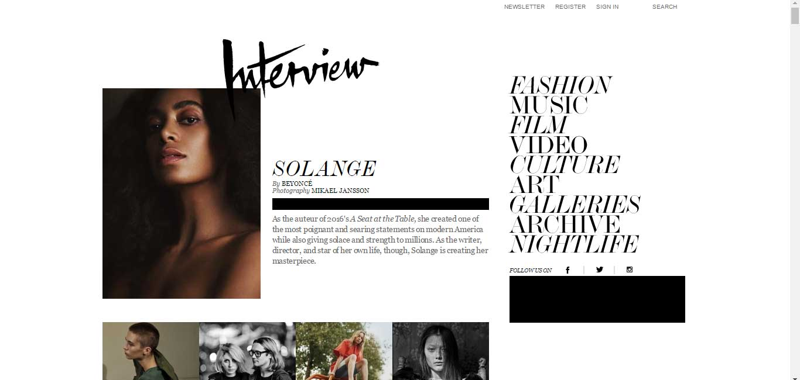

With it's impactful use of typography and asymmetrical layout, Interview Magazine stands out as a web publication for interesting user interface. The site was clearly designed to mimic a magazine spread, and judiciously spreads out headlines and images throughout each section. This unique look makes the website a memorable one, and certainly captured my attention upon arriving on the landing page. The landing page is also a continuous scroll, making it a little harder to reach the content but also makes the user feel like they are reading the newspaper. I think that the navigation is easy to use because it is fixed at the top of the page, and there is a clear visual hiearchy. My critique would be that the text looks a little squished together in some of the links, and the italic font isn't the easiest to decipher. Overall, I really like the unique layout, that while is unconventional is still anchored by an easily accesible navigation.
